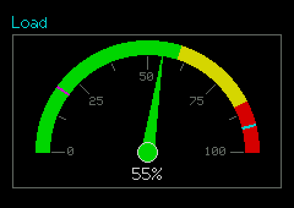

SuperGauge
A display-only dial with colour zones, ticks, a needle that takes the zone colour, and optional MinMax lines.
Display onlysrc/SuperGauge.h
What it looks like

Real renders from the library (headless, dark theme, Font2, shown at 2x).
Quick start
SuperGauge g(&lcd, 10, 10, 200, 120, &lgfx::fonts::Font2);
g.SetRange(0, 100);
g.AddZone(0, 60, TFT_GREEN); g.AddZone(60, 85, TFT_YELLOW); g.AddZone(85, 100, TFT_RED);
g.SetFormat(0, "%"); g.SetLabel("Load");
g.SetMinMax(6000, 6.f); // optional: min / max of the last 6 s as lines
form.Add(&g, false);
g.SetValue(42);Unique features
- Sweep in degrees clockwise from 12 o'clock: default -90..+90 (half dial); -135..+135 gives a 270 degree dial. A sweep that fits the upper half uses the half-dial layout.
- Zones paint coloured bands; with
NeedleByZone(default) the needle and hub take the colour of the zone the value is in. - Ticks:
SetTicks(major, minor); major ticks carry numbers when there is room (ShowTickLabels).NEEDLE_TAPER(default) orNEEDLE_LINE. - Smoothing is on by default:
SetValuestarts a glide of aboutSmoothMs; only redraws while moving. - MinMax:
SetMinMax(windowMs, minDegrees, thickness)draws the lowest and highest value of the lastwindowMsas lines, only when they differ from the needle by at leastminDegrees. Each line is centred on its value,thicknesspx thick, in the inverted colour of the dial segment under it. Old extremes age out by themselves. - Built from LovyanGFX primitives; no bitmaps.
GUI workflow
Display only: nothing to operate. The user sees the needle glide to a new value and, in MinMax mode, the two extreme markers appear when the reading has moved away from them and disappear when the window forgets them.
Event workflow
None. Feed it with SetValue(). Animation is driven by SuperControl::Tick() from SuperForm::Service(); without a form call Update() from loop().
Main API
| Call | What it does |
|---|---|
SetRange(min,max) | Value range |
AddZone(from,to,colour) | Coloured band |
SetSweep(startDeg,endDeg) | Dial angles |
SetTicks(major,minor) | Tick marks |
SetFormat(decimals, unit) | Value text |
SetSmoothing(bool) | Glide on / off |
SetMinMax(ms, deg, thick) | Window lines; windowMs 0 turns them off |
SetValue(v) | Needle target |
Tips and tricks
TipFeed it at a modest rate (the demo uses every 500 ms); the glide fills the gaps.
TipPick the window long enough to show a trend (seconds), and
minDegrees a few degrees so a steady value shows no lines.Pitfalls
Watch outA sweep wider than a half dial makes the control centre a full circle and needs a taller body.
Watch outWithout a form the glide and MinMax expiry only run if you call
Update().